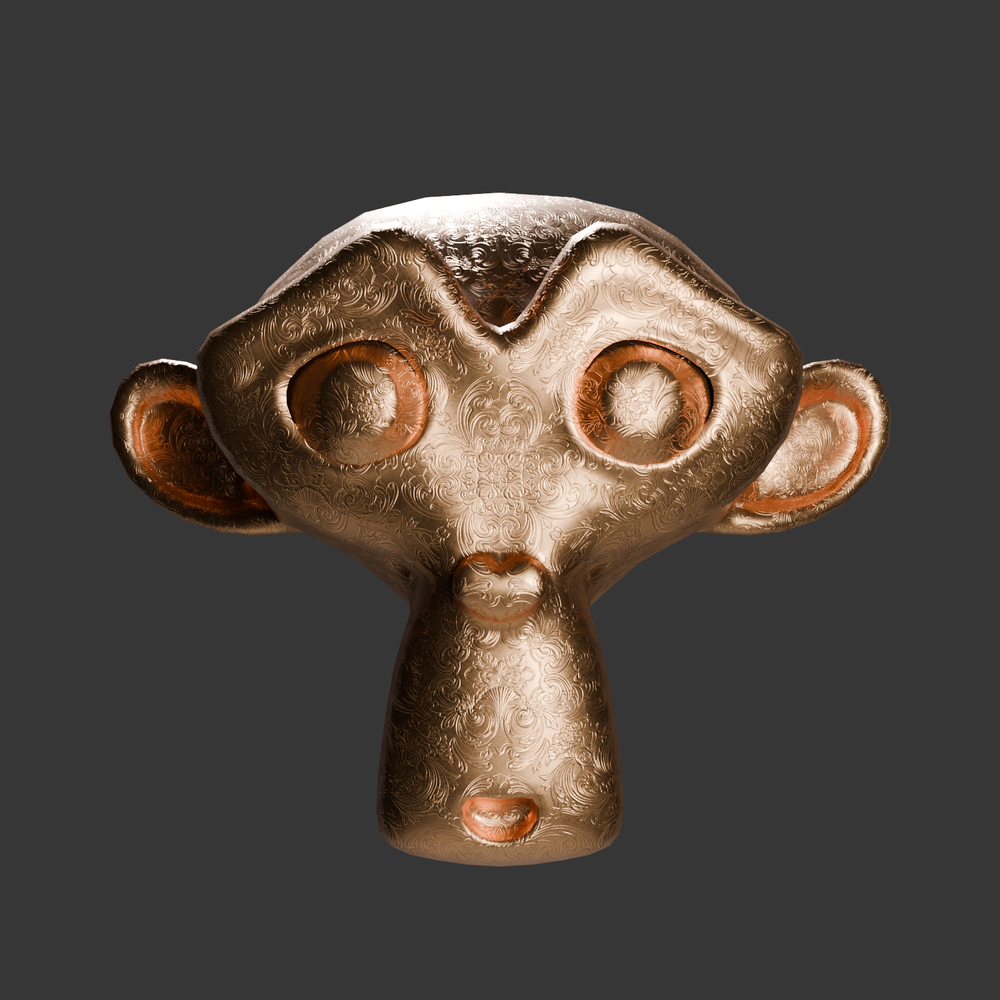

ARTH 353 and CART 263
As a practicing 3D artist, I’m interested in the usage, mechanisms and aesthetics of 3D imaging software, the technology used to create convincing 3D graphics. Specifically, I’m intrigued by how we are able to view and experience the virtual world as it is intrinsically synthetic. For this project, I investigated the history and development of 3D imaging software and how it has affected artists’ relationships with the medium over time. Experimenting and comparing ways in which 3D imaging is experienced, I evolve my understanding of how this technology can be furthered in creating 3D art. In summary of my research, I created a piece that encapsulates my discoveries and challenges the viewer’s perception of where they exist within the virtual space.
The first 3D Graphics Software can be traced back to Ivan Sutherland, often credited as the father of computer graphics. In 1963, Sutherland produced a software called Sketchpad as part of his PhD thesis at MIT. Running on one of the world's largest computers, Sketchpad enabled users to dynamically scale, move, and rotate entities displayed on a screen. Within this software, graphics were drawn directly onto the screen using a lightpen and altered with a variety of switches. Sketchpad was an invention designed for both artistic and practical purposes, and it paved the way for further 3D software innovations. Later in the 60s, Sutherland and his friend David Evans founded the computer graphics company, “Evans and Sutherland,” which is still in business today.
What stood out most to me about Sutherland’s Sketchpad is the ease with which the software seems to be used. Around 60 years ago, communication with a computer was performed through a terminal connected to the larger machine and required a substantial understanding of the device. In an interview demonstrating Sketchpad's capabilities, the technology was described as changing from an “elaborate calculator” to a “seemingly intelligent assistant.” Sutherland effectively created a graphic interface before the term was even used. In the demo video, this development in intuitivity was described as “improving the relationship between man and the machine.” This, for me, marks the beginning of experiencing real-time 3D graphics.
In the early 60s, an artist by the name of John Whitney was already integrating computer graphics into his work. He created abstract animations using analog computers repurposed from WW2 military equipment. His work can be seen throughout the 60s in TV animation and movie title sequences. One frustration Whitney had with his process was transferring high-quality images from the computer onto film. His method involved taking pictures of a monitor in a darkened room; however, a fair amount of vibrancy and clarity was lost in this procedure. On this, Whitney said, “To get emotionally involved creatively is not easy; one considerable problem has to do with real-time.” He compares this issue to a piano player creating music: “Imagine if he had to wait 12 some hours before he could hear the music he had performed.”
This struggle expressed by Whitney is felt even today by 3D artists. Although computers and 3D technology have drastically advanced since the 60s, high quality 3D images are produced through what is called “rendering.”
There are two main ways in which 3D art is experienced, the most popular being to endow 3D art with various photographic qualities to be expressed in the form of an image or video. In this case, the artist will use software such as Blender to produce a scene captured through a camera object. The artist here has control over what the audience sees, at what angle and from what perspective. The final product is processed through a rendering engine, often a lengthy but necessary step in creating a polished piece of 3D art. Taking into account many factors, such as how light interacts with material, modern rendering engines are incredible at simulating reality and capable of stunning results.
Often overlooked is real-time rendering, designed to allow artists to experience their creation as it is being constructed. This method is predominantly used in the game industry, as users enjoy seeing the environment adapt to their movements and decisions as they happen. In comparison to the elevated beauty and polish of post-rendering, real-time falls short as increasing detail drastically slows performance. However, lacking in this sense, real-time rendering is entirely more fascinating to me.
Below, I have created a comparison between post and real-time rendering utilizing the default Blender monkey head mesh, “Suzanne,” to demonstrate their differences and unique strengths. Both examples have a bronze, detailed texture and lights to illuminate the object. On the left is a rendered image using Blender’s rendering engine, “Cycles.” This engine is renowned for producing clean, photo-realistic results. To further display its advantages, I added an HDRI to the scene, a technology that captures a much wider range of light intensity from digital images, which further showcases Cycles' capabilities. On the right, I exported Suzanne as a GLB file and added it to a three.js scene, an open-source JavaScript library used to create and display 3D computer graphics in a web browser. Three.js uses real-time rendering to allow dynamic interaction. Users are allowed to deeply explore the scene, viewing the object from various angles, perspectives, and positions..

LEFT MOUSE: ORBIT --- RIGHT MOUSE: REPOSITION --- SCROLL: ZOOM
Displaying these two methods alongside each other, I noted some interesting observations, primarily with how I experienced the three.js model. When zooming in and out of the scene, the perspective from which I was viewing the model seemed to change based on my proximity to it, mimicking how the human eye will perceive an object in reality. Meaning the further away the object, the flatter it seems, and as you grow closer, it begins to reveal more of its surface. Although I had coded the perspective of the camera in three.js to 50mm, this element has the illusion of adapting to the user’s movement. Another detail I took note of was the effect of the unchanging background. Without a point of reference in the scene to indicate where Suzanne exists in space, it became unclear to me whether I was controlling the camera, my viewing point, or whether I was staying stagnant and controlling the object. Lastly, the open camera control reminded me of a text on post-photographic simulation by Rachel Clarke and Claudia Hart. They express 3D imaging systems as technology for looking into the “virtual world” and the camera as “viewing portals”. These viewing portals mimic the qualities of a camera; however, they possess the ability to transcend worldly restrictions. I experienced this myself with the example above, as I could pass directly through the object’s mesh, breaking the illusion of reality that 3D imaging software creates.
Rachel Clarke and Claudia Hart express that in 3D imaging software, you are simultaneously using the software to build a world as well as the mathematical rules for how the camera object sees it. Meaning the virtual world is purely digital data that only becomes perceivable when it is processed through the software's rendering engine. Whether that be in the viewport display in Blender, a beautifully rendered animation or in real-time using three.js. This differs from how cameras work in reality, as the world first exists, and the photo is taken after the fact. The place from which we view or experience 3D imaging is often referred to as the camera; however, evidently, they are quite dissimilar. Using the term “camera” refers to the viewing place, where the eye of the viewer exists in the virtual world. What we see through this “camera” is an illusion of immersion, using 3 axes to mimic real space.
Using real-time rendering, I wanted to embrace and display this idea of the “camera”, where the viewer exists in the virtual space, and how it affects their experience of 3D Imaging systems. Creating a scene in three.js, I added two cameras, one of which would allow for the user to experience immersion in the space and the other, which would reveal the synthetic nature of 3D imaging. With the second perspective, I included additional visuals to emphasize breaking away the viewer’s illusion. These perspectives can be switched at will using the “1” and “2” keys. The core subject of the scene is a 3D sculpted hand, which I created using Blender. This hand model draws inspiration from Ed Catmull, who was the first person to ever create a 3D model of a hand. During the time of its creation, 3D technology was predominantly creating inorganic shapes, making Catmull’s creation state-of-the-art for many years. This testimonial acknowledges the journey and history of 3D imaging as well as the 3D industry’s continuous goal for achieving realistic visuals.
LEFT MOUSE: ORBIT --- RIGHT MOUSE: REPOSITION --- SCROLL: ZOOM --- 1: IMMERSION --- 2: REALITY
What I find most interesting and exciting about this project is that by accessing the viewer’s webcam, they can experience the work as well as be a part of it. Attaching a mesh plane to the first camera perspective, the user’s webcam feed is played on top of it, moving along with them through virtual space. Seeing their own reflection in the object simultaneously adds tangibility to the synthetic world, yet suspends it, as the reflection displays a clearly digital and limited version of the user. Switching the second camera perspective clearly reveals to the user how they existed through the first camera. This piece challenges the viewer’s perception of 3D technology and its fabrication, and how 3D graphics work to simulate space.
Works cited:
Clarke, Rachel, and Claudia Hart. “POST-PHOTOGRAPHIC-SIMULATION.” THE REAL-FAKE, (unknown date), http://www.real-fake.org/postphoto.html.
crystalsculpture2, director. John Whitney "Catalog" 1961. 2007. YouTube, https://www.youtube.com/watch?v=TbV7loKp69s.
Dimitris Katsafouros, director. Ep.1: The pioneers of computer graphics 1960-1970. 2025. YouTube, https://www.youtube.com/watch?v=WeJX1DV0hq0&list=PLfErR5fO9pfUnpLlEmM6XdOzUluiMiMun&index=1&t=603s.
InspirationTuts, director. The first 3D software in History_Sketchpad. 2020. YouTube, https://www.youtube.com/watch?v=eP-TaulpvYg.
Interface Studies, director. Ivan Sutherland Sketchpad Demo 1963. 2012. YouTube, https://www.youtube.com/watch?v=6orsmFndx_o&list=PLfErR5fO9pfUnpLlEmM6XdOzUluiMiMun&index=2.
Credits:
Bronze texture: https://www.blenderkit.com
Code library: https://threejs.org
Modelling software: https://www.blender.org
Inspiration:
https://threejs.org/examples/#webgl_helpers
https://threejs.org/examples/#webgl_lights_spotlight
https://www.youtube.com/watch?v=Q2VMWR8xlls
https://cartographicperspectives.org/index.php/journal/article/view/1669/1947